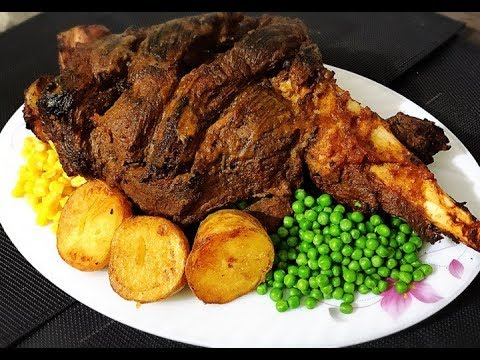

Special Mutton Leg Roast

Mutton Leg Dish
Special Mutton Leg Roast is filled with tender, juicy,
finger-licking taste to enjoy with your family and add cheer to your festive
get-together on this Eid-ul-Azha. Garnish with seasonal salad such as cucumber, onion rings,
salad leaves, lemon, and tomato slices. Serve with raita and enjoy with hot chapati.
Ingredients
- 1 (5 pound) leg of lamb, trimmed of excess fat
- 4 cups plain yogurt
- 4 tablespoons ginger-garlic paste
- 3 tablespoons lemon juice
- 2 tablespoons ground red chile pepper
- 2 tablespoons chaat masala
- 2 tablespoons garam masala
- 1 tablespoon salt, or to taste
- 1 tablespoon red pepper flakes
- 1 tablespoon ground turmeric
- 1 tablespoon ground black pepper
- 1 tablespoon ground cumin
- 1 tablespoon ground coriander
- 1 cup vegetable oil
Recipe
- Cut deep slashes about 2 inches apart across the lamb.
- Mix yogurt, ginger-garlic paste, lemon juice, ground red chile,
chaat masala, garam masala, salt, red pepper flakes, turmeric,
black pepper, cumin, and coriander together in a bowl. Whisk until well combined.
Apply marinade generously all over the lamb in a dish; turn over and apply more marinade.
Cover and refrigerate for 3 hours to overnight.
- Heat oil in a large cast-iron pot over medium heat.
Place the lamb leg gently into the bottom of the pot.
Cover and place a heavy weight on top of the lid.
Reduce heat to low and cook for 1 hour. Turn leg over and cook for another hour.
- Continue cooking lamb until liquid is mostly evaporated and meat is tender and golden,
about 15 minutes more. Oils should start collecting at the edges of the lamb.
An instant-read thermometer inserted into the center should read at
least 130 degrees F (54 degrees C). Transfer meat to a serving dish.
Return to top
Return to Home Page